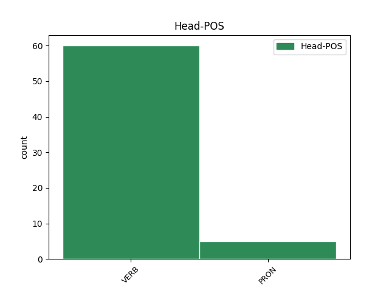
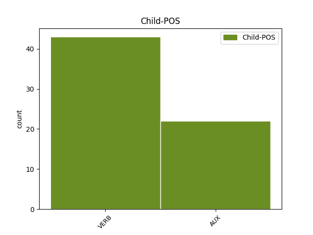

Distribution of features within this leaf


Agreement Rules sorted by frequency.
- When the dependent token is the conjunct(conj) of the head token, and the dependent token is VERB.
1 Aga _ _ _ _ 0 _ _ _
2 kus _ _ _ _ 0 _ _ _
3 on olema AUX V Mood=Ind|Number=Sing|Person=3|Tense=Pres|VerbForm=Fin|Voice=Act 0 _ _ _
4 kirjas _ _ _ _ 0 _ _ _
5 , _ _ _ _ 0 _ _ _
6 et _ _ _ _ 0 _ _ _
7 telo _ _ _ _ 0 _ _ _
8 on _ _ _ _ 0 _ _ _
9 katki _ _ _ _ 0 _ _ _
10 , _ _ _ _ 0 _ _ _
11 kõik _ _ _ _ 0 _ _ _
12 ju _ _ _ _ 0 _ _ _
13 väidavad väitma VERB V Mood=Ind|Number=Plur|Person=3|Tense=Pres|VerbForm=Fin|Voice=Act 3 conj _ SpaceAfter=No
14 , _ _ _ _ 0 _ _ _
15 et _ _ _ _ 0 _ _ _
16 neil _ _ _ _ 0 _ _ _
17 ka _ _ _ _ 0 _ _ _
18 krõbiseb _ _ _ _ 0 _ _ _
19 ja _ _ _ _ 0 _ _ _
20 mitte _ _ _ _ 0 _ _ _
21 ainult _ _ _ _ 0 _ _ _
22 sungid _ _ _ _ 0 _ _ _
23 . _ _ _ _ 0 _ _ _
1 Nokia _ _ _ _ 0 _ _ _
2 N95'el _ _ _ _ 0 _ _ _
3 sai saama AUX V Mood=Ind|Number=Sing|Person=3|Tense=Past|VerbForm=Fin|Voice=Act 0 _ _ _
4 jah _ _ _ _ 0 _ _ _
5 mingid _ _ _ _ 0 _ _ _
6 kaitse _ _ _ _ 0 _ _ _
7 läätse _ _ _ _ 0 _ _ _
8 tagand _ _ _ _ 0 _ _ _
9 maha _ _ _ _ 0 _ _ _
10 raputada _ _ _ _ 0 _ _ _
11 , _ _ _ _ 0 _ _ _
12 see _ _ _ _ 0 _ _ _
13 oli olema AUX V Mood=Ind|Number=Sing|Person=3|Tense=Past|VerbForm=Fin|Voice=Act 3 conj _ _
14 kord _ _ _ _ 0 _ _ _
15 lahti _ _ _ _ 0 _ _ _
16 siis _ _ _ _ 0 _ _ _
17 raputat _ _ _ _ 0 _ _ _
18 ja _ _ _ _ 0 _ _ _
19 läks _ _ _ _ 0 _ _ _
20 ise _ _ _ _ 0 _ _ _
21 kinni _ _ _ _ 0 _ _ _
22 . _ _ _ _ 0 _ _ _
1 Light _ _ _ _ 0 _ _ _
2 piletid _ _ _ _ 0 _ _ _
3 on _ _ _ _ 0 _ _ _
4 mõeldud _ _ _ _ 0 _ _ _
5 nende tema PRON P Case=Gen|Number=Plur|Person=3|PronType=Prs 0 _ _ _
6 jaoks _ _ _ _ 0 _ _ _
7 , _ _ _ _ 0 _ _ _
8 kes _ _ _ _ 0 _ _ _
9 reisivad reisima VERB V Mood=Ind|Number=Plur|Person=3|Tense=Pres|VerbForm=Fin|Voice=Act 5 mod@relcl _ _
10 vaid _ _ _ _ 0 _ _ _
11 käsipagasiga _ _ _ _ 0 _ _ _
12 ehk _ _ _ _ 0 _ _ _
13 ilma _ _ _ _ 0 _ _ _
14 äraantava _ _ _ _ 0 _ _ _
15 pagasita _ _ _ _ 0 _ _ _
16 . _ _ _ _ 0 _ _ _
1 2. _ _ _ _ 0 _ _ _
2 ärge ära AUX V Mood=Imp|Number=Plur|Person=2|Polarity=Neg|Tense=Pres|VerbForm=Fin|Voice=Act 0 _ _ _
3 ostke ostma VERB V Mood=Imp|Number=Plur|Person=2|Tense=Pres|VerbForm=Fin|Voice=Act 2 comp:aux _ _
4 kaupa _ _ _ _ 0 _ _ _
5 mida _ _ _ _ 0 _ _ _
6 toodaks _ _ _ _ 0 _ _ _
7 välismaalt _ _ _ _ 0 _ _ _
8 – _ _ _ _ 0 _ _ _
9 nende _ _ _ _ 0 _ _ _
10 kaupade _ _ _ _ 0 _ _ _
11 hinnad _ _ _ _ 0 _ _ _
12 jäävad _ _ _ _ 0 _ _ _
13 samaks _ _ _ _ 0 _ _ _
14 või _ _ _ _ 0 _ _ _
15 odavnevad _ _ _ _ 0 _ _ _
16 3. _ _ _ _ 0 _ _ _
17 Raha _ _ _ _ 0 _ _ _
18 vahetus _ _ _ _ 0 _ _ _
19 praegu _ _ _ _ 0 _ _ _
20 või _ _ _ _ 0 _ _ _
21 pärast _ _ _ _ 0 _ _ _
22 euro _ _ _ _ 0 _ _ _
23 tulekut _ _ _ _ 0 _ _ _
24 pole _ _ _ _ 0 _ _ _
25 mõtet _ _ _ _ 0 _ _ _
26 või _ _ _ _ 0 _ _ _
27 ainult _ _ _ _ 0 _ _ _
28 väikeses _ _ _ _ 0 _ _ _
29 koguses _ _ _ _ 0 _ _ _
30 . _ _ _ _ 0 _ _ _
1 Nüüd _ _ _ _ 0 _ _ _
2 oli olema AUX V Mood=Ind|Number=Sing|Person=3|Tense=Past|VerbForm=Fin|Voice=Act 0 _ _ _
3 küte _ _ _ _ 0 _ _ _
4 jälle _ _ _ _ 0 _ _ _
5 roppkallis _ _ _ _ 0 _ _ _
6 , _ _ _ _ 0 _ _ _
7 nii _ _ _ _ 0 _ _ _
8 et _ _ _ _ 0 _ _ _
9 pensionist _ _ _ _ 0 _ _ _
10 jäi jääma VERB V Mood=Ind|Number=Sing|Person=3|Tense=Past|VerbForm=Fin|Voice=Act 2 mod _ _
11 pärast _ _ _ _ 0 _ _ _
12 kohustuslike _ _ _ _ 0 _ _ _
13 maksude _ _ _ _ 0 _ _ _
14 ( _ _ _ _ 0 _ _ _
15 korter _ _ _ _ 0 _ _ _
16 , _ _ _ _ 0 _ _ _
17 elekter _ _ _ _ 0 _ _ _
18 , _ _ _ _ 0 _ _ _
19 telefon _ _ _ _ 0 _ _ _
20 ) _ _ _ _ 0 _ _ _
21 järele _ _ _ _ 0 _ _ _
22 vaid _ _ _ _ 0 _ _ _
23 10 _ _ _ _ 0 _ _ _
24 krooni _ _ _ _ 0 _ _ _
25 päeva _ _ _ _ 0 _ _ _
26 kohta _ _ _ _ 0 _ _ _
27 . _ _ _ _ 0 _ _ _
1 Ei _ _ _ _ 0 _ _ _
2 hakka _ _ _ _ 0 _ _ _
3 pikemalt _ _ _ _ 0 _ _ _
4 kirjutama _ _ _ _ 0 _ _ _
5 , _ _ _ _ 0 _ _ _
6 kelle _ _ _ _ 0 _ _ _
7 huvi _ _ _ _ 0 _ _ _
8 tekkis tekkima VERB V Mood=Ind|Number=Sing|Person=3|Tense=Past|VerbForm=Fin|Voice=Act 9 subj _ _
9 loeb lugema VERB V Mood=Ind|Number=Sing|Person=3|Tense=Pres|VerbForm=Fin|Voice=Act 0 _ _ _
10 ise _ _ _ _ 0 _ _ _
1 Paljudel _ _ _ _ 0 _ _ _
2 juhtudel _ _ _ _ 0 _ _ _
3 on olema VERB V Mood=Ind|Number=Sing|Person=3|Tense=Pres|VerbForm=Fin|Voice=Act 0 _ _ _
4 see _ _ _ _ 0 _ _ _
5 on olema AUX V Mood=Ind|Number=Sing|Person=3|Tense=Pres|VerbForm=Fin|Voice=Act 3 reparandum _ _
6 lihtsalt _ _ _ _ 0 _ _ _
7 psüholoogiline _ _ _ _ 0 _ _ _
8 mõjutamine _ _ _ _ 0 _ _ _
9 . _ _ _ _ 0 _ _ _
1 Mures _ _ _ _ 0 _ _ _
2 inimesel _ _ _ _ 0 _ _ _
3 võibolla _ _ _ _ 0 _ _ _
4 ei _ _ _ _ 0 _ _ _
5 ole _ _ _ _ 0 _ _ _
6 meeles _ _ _ _ 0 _ _ _
7 , _ _ _ _ 0 _ _ _
8 et _ _ _ _ 0 _ _ _
9 ennustuses _ _ _ _ 0 _ _ _
10 oli olema AUX V Mood=Ind|Number=Sing|Person=3|Tense=Past|VerbForm=Fin|Voice=Act 0 _ _ _
11 - _ _ _ _ 0 _ _ _
12 " _ _ _ _ 0 _ _ _
13 ja _ _ _ _ 0 _ _ _
14 kõik _ _ _ _ 0 _ _ _
15 saab saama VERB V Mood=Ind|Number=Sing|Person=3|Tense=Pres|VerbForm=Fin|Voice=Act 10 subj@cop _ _
16 korda _ _ _ _ 0 _ _ _
17 . _ _ _ _ 0 _ _ _
18 " _ _ _ _ 0 _ _ _
1 või _ _ _ _ 0 _ _ _
2 see _ _ _ _ 0 _ _ _
3 kehtib kehtima VERB V Mood=Ind|Number=Sing|Person=3|Tense=Pres|VerbForm=Fin|Voice=Act 0 _ _ _
4 ka _ _ _ _ 0 _ _ _
5 tänapäeval _ _ _ _ 0 _ _ _
6 , _ _ _ _ 0 _ _ _
7 mida _ _ _ _ 0 _ _ _
8 Jesaja _ _ _ _ 0 _ _ _
9 ütleb ütlema VERB V Mood=Ind|Number=Sing|Person=3|Tense=Pres|VerbForm=Fin|Voice=Act 3 unk _ SpaceAfter=No
10 : _ _ _ _ 0 _ _ _
11 silmad _ _ _ _ 0 _ _ _
12 neil _ _ _ _ 0 _ _ _
13 on _ _ _ _ 0 _ _ _
14 , _ _ _ _ 0 _ _ _
15 aga _ _ _ _ 0 _ _ _
16 nad _ _ _ _ 0 _ _ _
17 ei _ _ _ _ 0 _ _ _
18 näe _ _ _ _ 0 _ _ _
19 ; _ _ _ _ 0 _ _ _
20 kõrvad _ _ _ _ 0 _ _ _
21 neil _ _ _ _ 0 _ _ _
22 on _ _ _ _ 0 _ _ _
23 aga _ _ _ _ 0 _ _ _
24 nad _ _ _ _ 0 _ _ _
25 ei _ _ _ _ 0 _ _ _
26 kuule _ _ _ _ 0 _ _ _
27 ? _ _ _ _ 0 _ _ _
1 ja _ _ _ _ 0 _ _ _
2 kui _ _ _ _ 0 _ _ _
3 saab _ _ _ _ 0 _ _ _
4 tugeva _ _ _ _ 0 _ _ _
5 löögi _ _ _ _ 0 _ _ _
6 nurka _ _ _ _ 0 _ _ _
7 siis _ _ _ _ 0 _ _ _
8 on olema AUX V Mood=Ind|Number=Sing|Person=3|Tense=Pres|VerbForm=Fin|Voice=Act 0 _ _ _
9 ekraan _ _ _ _ 0 _ _ _
10 totaalselt _ _ _ _ 0 _ _ _
11 puru _ _ _ _ 0 _ _ _
12 , _ _ _ _ 0 _ _ _
13 samas _ _ _ _ 0 _ _ _
14 kui _ _ _ _ 0 _ _ _
15 tavalisel _ _ _ _ 0 _ _ _
16 klaasile _ _ _ _ 0 _ _ _
17 võib võima AUX V Mood=Ind|Number=Sing|Person=3|Tense=Pres|VerbForm=Fin|Voice=Act 8 mod _ _
18 teha _ _ _ _ 0 _ _ _
19 vaid _ _ _ _ 0 _ _ _
20 ühe _ _ _ _ 0 _ _ _
21 pooliku _ _ _ _ 0 _ _ _
22 prao _ _ _ _ 0 _ _ _
23 , _ _ _ _ 0 _ _ _
24 kui _ _ _ _ 0 _ _ _
25 sedagi _ _ _ _ 0 _ _ _
26 . _ _ _ _ 0 _ _ _
Disagree Examples:
1 Hiljuti _ _ _ _ 0 _ _ _
2 läksin minema VERB V Mood=Ind|Number=Sing|Person=1|Tense=Past|VerbForm=Fin|Voice=Act 0 _ _ _
3 oma _ _ _ _ 0 _ _ _
4 külalistega _ _ _ _ 0 _ _ _
5 sinna _ _ _ _ 0 _ _ _
6 ja _ _ _ _ 0 _ _ _
7 oli olema AUX V Mood=Ind|Number=Sing|Person=3|Tense=Past|VerbForm=Fin|Voice=Act 2 conj _ _
8 ikka _ _ _ _ 0 _ _ _
9 piinlik _ _ _ _ 0 _ _ _
10 küll _ _ _ _ 0 _ _ _
11 . _ _ _ _ 0 _ _ _
1 See _ _ _ _ 0 _ _ _
2 aga _ _ _ _ 0 _ _ _
3 eeldab _ _ _ _ 0 _ _ _
4 seda _ _ _ _ 0 _ _ _
5 , _ _ _ _ 0 _ _ _
6 et _ _ _ _ 0 _ _ _
7 mõistad _ _ _ _ 0 _ _ _
8 asjade _ _ _ _ 0 _ _ _
9 tähendust _ _ _ _ 0 _ _ _
10 ja _ _ _ _ 0 _ _ _
11 nende tema PRON P Case=Gen|Number=Plur|Person=3|PronType=Prs 0 _ _ _
12 tähtsust _ _ _ _ 0 _ _ _
13 , _ _ _ _ 0 _ _ _
14 kellele _ _ _ _ 0 _ _ _
15 teed tegema VERB V Mood=Ind|Number=Sing|Person=2|Tense=Pres|VerbForm=Fin|Voice=Act 11 mod@relcl _ SpaceAfter=No
16 . _ _ _ _ 0 _ _ _
1 Kui _ _ _ _ 0 _ _ _
2 seda _ _ _ _ 0 _ _ _
3 soovitust _ _ _ _ 0 _ _ _
4 järgida _ _ _ _ 0 _ _ _
5 , _ _ _ _ 0 _ _ _
6 siis _ _ _ _ 0 _ _ _
7 muutub muutuma VERB V Mood=Ind|Number=Sing|Person=3|Tense=Pres|VerbForm=Fin|Voice=Act 0 _ _ _
8 söögitegemine _ _ _ _ 0 _ _ _
9 millekski _ _ _ _ 0 _ _ _
10 enamaks _ _ _ _ 0 _ _ _
11 ja _ _ _ _ 0 _ _ _
12 me _ _ _ _ 0 _ _ _
13 ise _ _ _ _ 0 _ _ _
14 oleme olema AUX V Mood=Ind|Number=Plur|Person=1|Tense=Pres|VerbForm=Fin|Voice=Act 7 conj _ _
15 saanud _ _ _ _ 0 _ _ _
16 läbi _ _ _ _ 0 _ _ _
17 selle _ _ _ _ 0 _ _ _
18 uueks _ _ _ _ 0 _ _ _
19 ja _ _ _ _ 0 _ _ _
20 energilisemaks _ _ _ _ 0 _ _ _
21 . _ _ _ _ 0 _ _ _
1 Aga _ _ _ _ 0 _ _ _
2 nagu _ _ _ _ 0 _ _ _
3 ma _ _ _ _ 0 _ _ _
4 ütlesin ütlema VERB V Mood=Ind|Number=Sing|Person=1|Tense=Past|VerbForm=Fin|Voice=Act 0 _ _ _
5 ka _ _ _ _ 0 _ _ _
6 Sulele _ _ _ _ 0 _ _ _
7 , _ _ _ _ 0 _ _ _
8 et _ _ _ _ 0 _ _ _
9 mõista _ _ _ _ 0 _ _ _
10 mõttetera _ _ _ _ 0 _ _ _
11 on olema VERB V Mood=Ind|Number=Sing|Person=3|Tense=Pres|VerbForm=Fin|Voice=Act 4 conj _ _
12 vaja _ _ _ _ 0 _ _ _
13 teemasse _ _ _ _ 0 _ _ _
14 süveneda _ _ _ _ 0 _ _ _
15 . _ _ _ _ 0 _ _ _
1 Tahame tahtma VERB V Mood=Ind|Number=Plur|Person=1|Tense=Pres|VerbForm=Fin|Voice=Act 0 _ _ _
2 vastu _ _ _ _ 0 _ _ _
3 vaielda _ _ _ _ 0 _ _ _
4 aga _ _ _ _ 0 _ _ _
5 kõik _ _ _ _ 0 _ _ _
6 elus _ _ _ _ 0 _ _ _
7 peab pidama AUX V Mood=Ind|Number=Sing|Person=3|Tense=Pres|VerbForm=Fin|Voice=Act 1 conj _ _
8 tasakaalus _ _ _ _ 0 _ _ _
9 olema _ _ _ _ 0 _ _ _
10 . _ _ _ _ 0 _ _ _